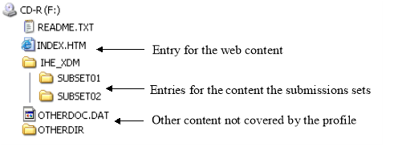
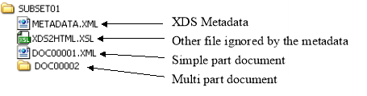

IHE IT Infrastructure (ITI)
Technical Framework
Revision 16.0 – Final Text
This section corresponds to transaction [ ITI-32 ] of the IHE IT Infrastructure Technical Framework. Transaction [ ITI-32 ] is used by the Portable Media Creator to create the media content and by Portable Media Importer to read the media content.
In the Distribute Document Set on Media transaction the Portable Media Creator sends information to media reading actors by means of Interchange Media where it stores the information.
Actor: Portable Media Creator
Role: Assemble the media content and store it on the media to be distributed.
Actor: Portable Media Importer
Role: Read the Document Submission Set content of distributed media in order to access the document(s) and the relevant metadata and perform import of the documents on the media.
ITI TF-3: 4 Metadata used in Document Sharing profiles
DICOM PS3.10 Media Storage and File Format for Data Interchange (DICOM file format). http://www.w3.org/TR/xhtml1 .
DICOM PS3.12 Media Formats and Physical Media for Data Interchange, Annex F – - 120mm CD-R media, Annex R – - USB Connected Removable Devices, Annex V – - ZIP File Over Media, and Annex W – - Email Media. http://dicom.nema.org/
DICOM PS3.15 Security and System Management Profiles , Annex B – - Secure Transport Connection Profiles. http://dicom.nema.org/
XHTML™ 1.0 The Extensible HyperText Markup Language (Second Edition). A Reformulation of HTML 4 in XML 1.0. W3C Recommendation 26 January 2000, revised 1 August 2002. http://www.w3.org/TR/xhtml1 .
XHTML™ Basic. W3C Recommendation 19 December 2000. http://www.w3.org/TR/xhtm-basic .
MDN: RFC3798 Message Disposition Notification. http://www.rfc-editor.org/rfc/rfc3798.txt

Figure 3.32.4-1: Interaction Diagram
This transaction defines the interchange of XDS document submission sets on media. It specifies the requirements for a directory structure, and the physical media where stored.
The file directory structure restrictions and file organization are specified below. These are based on industry standard file systems with restrictions chosen based on experience with demonstrated interoperability in the field of reliable exchange. These are defined in Part 10 of the DICOM standard and summarized below.
The media that are supported are:
The user at the Portable Media Creator wishes to transport information by the creation and transport of interchange media. The Portable Media Creator assembles the Interchange Media content and stores it on the media.
If the ZIP over Email Response Option is supported, the Portable Media Importer shall detect whether the Import was successful or not.
The message semantics of this transaction are described in terms of content specifications for the media.
The Portable Media Creator shall be able to include one or multiple Submission Set(s), including document(s) and associated metadata. Additionally , it shall include a README.TXT file and an INDEX.HTM and associated files for use to display the media content using a simple browser. It may include other files and directories that the Portable Media Importer will ignore.
The following restrictions are needed to ensure broad interoperability:
Note: Refer to RAD TF-3: Appendix E of the IHE Radiology Technical Framework for a reference to common implementation misinterpretations and/or errors that are detrimental to interoperability.

Figure 3.32.4.1-1: General structure of the media
The media shall contain at the “root” directory level, as shown in the figure above:
As shown in the figure above, the IHE_XDM directory shall contain one sub-directory per submission set included on the media.
There may be other files present on the media for other purposes, (e.g., use in compliance with the IHE Radiology Portable Data for Imaging ( PDI ) Profile). The presence or absence of these files shall not affect performance of this transaction. The grouping with PDI actors is described in RAD TF-3 4.47.4.1.2.3.3 for the Portable Media Creator and in RAD TF-3 4.47.4.1.3.4.1 for the Portable Media Importer.

Figure 3.32.4.1-2: Structure of a submission set directory on the media
As shown on the figure above, each submission set directory shall contain:
The “multipart” document shall be structured as one sub-directory containing all the parts as file, including the “start” part corresponding to the main file to be open by the “multipart” document viewer. An example of “multipart” document is shown in Figure 3.32.4.1-3.

Figure 3.32.4.1-3: Structure on the media of a directory which is functionally equivalent to “XDS multipart document”
The URI element of the metadata describing a file that is present on this media shall point to the file containing the document, through a relative URI where the base URI is the directory holding the METADATA.XML file that contains the DocumentEntry.URI attribute. In cases where the files are not located within this media directory for the Submission Set, the relative URI may begin with “../”.
In Figure 3.32.4.1-2, the METADATA.XML file of the Submission Set stored in the SUBSET01 directory will contain many XDSDocumentEntry objects having their elements set as follows (see ITI TF-3: Table 4.1-5 , URI attribute for details):
<ExtrinsicObject id="Document1" mimeType="text/xml"... (with URI set to “DOC00001.XML”)
<ExtrinsicObject id="Document2" mimeType="text/xml"... (with URI set to “DOC00002/DOC00002.XML”)
The file named INDEX.HTM in the root directory shall be encoded in compliance with the XHTML Basic recommendation from W3C. It may contain a description of the submission sets, including especially:
Note: XDM Distribute Document Set on Media transaction does not require that all the submission sets included in the media are relative to the same patient.
It may also describe other content which is on the media, including the means to launch any executable that may be present on the media.
There shall also be a README.TXT file located in the root directory that shall contain:
Note that generally the README.TXT file is independent of the clinical content of the media, i.e., the same README.TXT may be included on all media created by that application at that institution. Experience has shown that this kind of README.TXT file is very valuable for resolving problems.
In addition, if the Portable Media Creator implements support for the Web Content Option of the PDI Profile then the INDEX.HTM file must meet the requirements of the PDI Profile Web Content Option.
The INDEX.HTM file located in the root directory shall contain:
If the ZIP over Email Response Option is supported and a response was requested, the Portable Media Importer shall send a response, based on the [MDN] mechanism, depending of the success of the Import operation:
Note 1: Older implementations of MDN might use “processed” instead of “display”. The current RFC has removed this option but Portable Media Creator should be prepared to receive it. If they receive it, they have to look in the error field to see whether there is an error.
Note 2: The general mechanism for use of Email is described in ITI TF-2x: Appendix T (Informative)
The Portable Media Creator may add a human-readable identification on the outside of the physical medium, reflecting the originating institution, the time of the creation and content of the media. The method of media marking is outside the scope of this transaction.
If the ZIP over Email Response Option is supported, Portable Media Creator shall be configurable to include in its message header the request for a response:
Then, the Portable Media Importer shall acknowledge this operation by sending a MDN response to the email address included in the message.
And finally, the Portable Media Creator shall consider that the import is successful unless:
Note: This transaction does not specify how errors should be processed because the variety of appropriate responses is too great.
If the ZIP over Email Option is supported, the subject line of the email shall contain the phrase:
Note: In case the same Email complies also with the DICOM Email, it is recommended that the subject contains the phrase: XDM/1.0/DDM+DICOM-ZIP
The Portable Media Importer shall verify the integrity of the media by comparing their size and hash with the value of the corresponding entries in the METADATA.XML file of the relevant submission set directory. Mismatching documents shall be indicated to the user. Media faults shall be indicated to the user.
If the XDM Portable Media Importer is grouped with a Content Consumer of one or more IHE Content Profiles, that actor is able to perform its processing on the documents it is designed to support.
Note: This awkward phrasing means that ability to process data on portable media is described by saying that the processing actor is grouped with a Portable Media Importer.
If the Basic Patient Privacy Enforcement Option is implemented:
The Portable Media Importer shall abide by the XDS Affinity Domain Policies represented by the confidentialityCode in the metadata associated with the document. The Portable Media Creator likely will have user access controls or business rule capabilities to determine the details of how confidentiality codes apply to query results. The details of this are product specific and not specified by IHE. These rules shall reduce the query results to only those that are appropriate to the current situation for that actor and user.
A Portable Media Importer supporting the Zip over Email Option shall support S/MIME (see ITI TF-2a: 3.19.3) to both decrypt and verify the signature of the message. The Portable Media Importer shall furthermore comply with the security process as defined in the DICOM PS3.15 Annex B.8 (Secure Use of Email Transport) .
In the case of physical media, encryption of the CD-R or USB shall not be used.
If the ZIP over Email Option is supported, the transaction shall be secured by S/MIME (see the ATNA Profile ) and comply with the security process as defined in the DICOM PS3.15 Annex B.8 (Secure Use of Email Transport ). The security process requires the use of S/MIME to both encrypt and sign the message. The encryption is used to maintain confidentiality during the transport. The signature is used to maintain integrity during transport and indicates that the sender is authorized to send the message.
The Portable Media Importer shall check the hash value and size as found in the Document Sharing metadata to detect corruption within the metadata or media. The Portable Media Importer shall notify the user if any errors are detected.
The Distribute Document Set on Media Transaction is a PHI-Export for the Portable Media Creator and a PHI-Import for the Portable Media Importer as defined in ITI TF-2a: Table 3.20.4.1.1.1-1 .
The audit message for a Portable Media Creator shall comply with the specifications in Section 3.41.5.1, with the following exceptions.
The audit message for a Portable Media Importer shall comply with the specifications in Section 3.41.5.2, with the following exceptions.